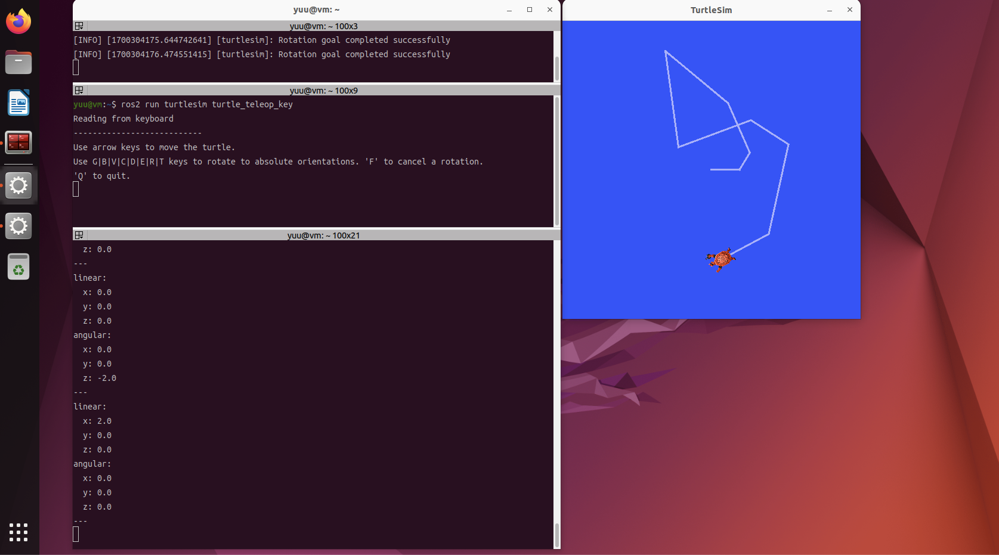
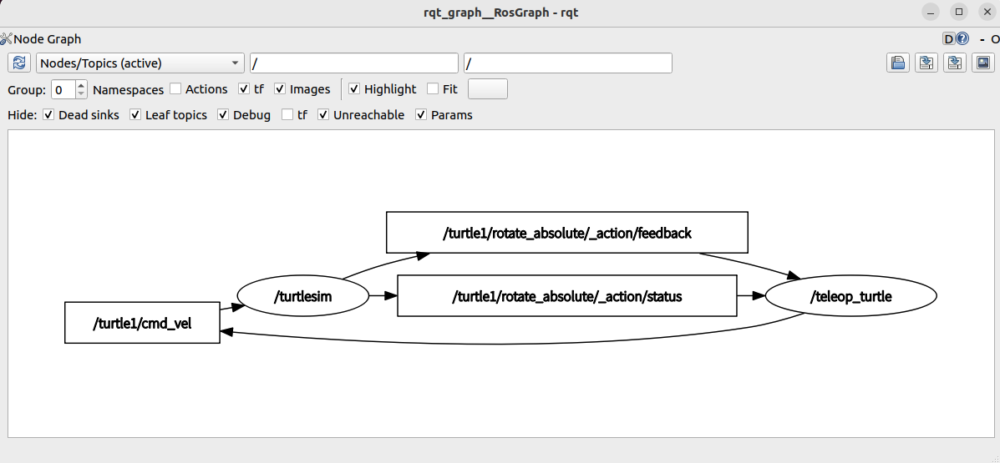

トピック通信の理解
ROS2におけるトピック通信について学びます．
目的
ROS2のシステムで利用されているトピック通信について学びます．
講義の前半では座学形式でトピック通信の仕組みについて理解し，
後半ではコマンドラインツールと簡易シミュレータturtlesimを用いた演習により，ノードやトピックの概念，通信方法を理解します．
ROS2のコマンドライン
Ubuntuでは，ターミナルに文字列を入力して操作することが基本となります．
ターミナルに入力する文字列のことをコマンドラインと呼びます．
まずはROS2のコマンドラインを確認するために，下記のコマンドラインをターミナルで実行してください．
1
2
3
4
5
6
7
8
9
10
11
12
13
14
15
16
17
18
19
20
21
22
23
24
25
26
27
28
29
30
31
32
33
34
|
$ ros2
usage: ros2 [-h] [--use-python-default-buffering]
Call `ros2 <command> -h` for more detailed usage. ...
ros2 is an extensible command-line tool for ROS 2.
options:
-h, --help show this help message and exit
--use-python-default-buffering
Do not force line buffering in stdout and instead use
the python default buffering, which might be affected
by PYTHONUNBUFFERED/-u and depends on whatever stdout
is interactive or not
Commands:
action Various action related sub-commands
bag Various rosbag related sub-commands
component Various component related sub-commands
daemon Various daemon related sub-commands
doctor Check ROS setup and other potential issues
interface Show information about ROS interfaces
launch Run a launch file
lifecycle Various lifecycle related sub-commands
multicast Various multicast related sub-commands
node Various node related sub-commands
param Various param related sub-commands
pkg Various package related sub-commands
run Run a package specific executable
security Various security related sub-commands
service Various service related sub-commands
topic Various topic related sub-commands
wtf Use `wtf` as alias to `doctor`
Call `ros2 <command> -h` for more detailed usage.
|
ROS2のコマンドラインは，ROS2という単語にサブコマンドを加えることで，様々なコマンドラインを実行することができるようになっています．
また，上記のようにオプションとして-hを加えることで，コマンドの仕様を確認することができますので，必要に応じて確認しましょう．
ノードの起動と確認
まずはノードを起動します．
ノードを起動するために，先ほど調べたサブコマンドの中のrunを使用します．
runの使用を確認しましょう．
1
2
3
4
5
6
7
8
9
10
11
12
13
14
|
$ ros2 run -h
usage: ros2 run [-h] [--prefix PREFIX] package_name executable_name ...
Run a package specific executable
positional arguments:
package_name Name of the ROS package
executable_name Name of the executable
argv Pass arbitrary arguments to the executable
options:
-h, --help show this help message and exit
--prefix PREFIX Prefix command, which should go before the executable. Command must be wrapped in quotes if it contains spaces (e.g. --prefix 'gdb -ex run
--args').
|
ノードを起動するためには，ros2 runの後にpackage_nameとexecutable_nameを入力すれば良いことがわかります．
今回はpackage_nameにturtlesim，executable_nameにturtlesim_nodeとし，
簡易シミュレータであるturtlesimを起動します．
1
|
$ ros2 run turtlesim turtlesim_node
|
上記のコマンドを実行すると簡易シミュレータTurtlesimが起動します．

Turtlesimを実行したターミナルはコマンドラインを受け付けない状態になっています．
終了する場合には，Ctrlキーとcキーを同時に入力してください．
次に起動したノードの情報を確認しましょう．
ノードの情報を確認するために，まずはサブコマンドnodeの仕様を確認します．
新しいターミナルを起動して下記のコマンドを実行してください．
1
2
3
4
5
6
7
8
9
10
11
12
13
|
$ ros2 node -h
usage: ros2 node [-h] Call `ros2 node <command> -h` for more detailed usage. ...
Various node related sub-commands
options:
-h, --help show this help message and exit
Commands:
info Output information about a node
list Output a list of available nodes
Call `ros2 node <command> -h` for more detailed usage.
|
ros2 nodeでは，infoとlistが用意されていることがわかります．
まずはlistにより，アクティブなノードの一覧を表示しましょう．
1
2
|
$ros2 node list
/turtlesim
|
上記の結果からrunコマンドにより起動した/turtlesimが起動していることがわかります．
次にinfoコマンドによりノードの詳細な情報を調べてみましょう．
1
2
3
4
5
6
7
8
9
10
11
12
13
14
15
16
17
18
19
20
21
22
23
24
25
26
27
28
29
|
$ ros2 node info /turtlesim
/turtlesim
Subscribers:
/parameter_events: rcl_interfaces/msg/ParameterEvent
/turtle1/cmd_vel: geometry_msgs/msg/Twist
Publishers:
/parameter_events: rcl_interfaces/msg/ParameterEvent
/rosout: rcl_interfaces/msg/Log
/turtle1/color_sensor: turtlesim/msg/Color
/turtle1/pose: turtlesim/msg/Pose
Service Servers:
/clear: std_srvs/srv/Empty
/kill: turtlesim/srv/Kill
/reset: std_srvs/srv/Empty
/spawn: turtlesim/srv/Spawn
/turtle1/set_pen: turtlesim/srv/SetPen
/turtle1/teleport_absolute: turtlesim/srv/TeleportAbsolute
/turtle1/teleport_relative: turtlesim/srv/TeleportRelative
/turtlesim/describe_parameters: rcl_interfaces/srv/DescribeParameters
/turtlesim/get_parameter_types: rcl_interfaces/srv/GetParameterTypes
/turtlesim/get_parameters: rcl_interfaces/srv/GetParameters
/turtlesim/list_parameters: rcl_interfaces/srv/ListParameters
/turtlesim/set_parameters: rcl_interfaces/srv/SetParameters
/turtlesim/set_parameters_atomically: rcl_interfaces/srv/SetParametersAtomically
Service Clients:
Action Servers:
/turtle1/rotate_absolute: turtlesim/action/RotateAbsolute
Action Clients:
|
infoコマンドにより指定したノードが購読するトピック，配信するトピック，
サービス通信とアクション通信のサーバ及びクライアントの一覧を出力することができます．
/turtlesimノードは，2つのトピックを購読し，4つのトピックを配信していることがわかります．
トピック名の後(:の後)にはメッセージの型も表示されます．
infoは便利なコマンドですので使えるようになりましょう．
トピック通信
ここまではros2 nodeに関連したコマンドを学びました．
次はros2 topicに関連したコマンドを学びます．
トピックの確認
/turtlesimノード単体ではトピック通信ができないため，もう1つノードを起動します．
新しいターミナルを起動し，下記のノードを実行しましょう．
1
2
3
4
5
6
|
$ ros2 run turtlesim turtle_teleop_key
Reading from keyboard
---------------------------
Use arrow keys to move the turtle.
Use G|B|V|C|D|E|R|T keys to rotate to absolute orientations. 'F' to cancel a rotation.
'Q' to quit.
|
上記のノードを実行することでキーボードによりロボット(亀)を操作できます．
キーボードの各キーに対応してロボットを動かします．
/turtle_teleop_keyを起動したターミナルがアクティブになった状態でしか操作できないので注意してください．
新たにノードを起動したので，起動しているノードは2つになっているはずです．
先ほどの方法で確認しましょう．
1
2
3
|
$ ros2 node list
/teleop_turtle
/turtlesim
|
次にトピックに関連したコマンドを学びます．
まずはros2 topicのヘルプを見てみましょう．
1
2
3
4
5
6
7
8
9
10
11
12
13
14
15
16
17
18
19
20
21
|
$ ros2 topic -h
usage: ros2 topic [-h] [--include-hidden-topics]
Call `ros2 topic <command> -h` for more detailed usage. ...
Various topic related sub-commands
options:
-h, --help show this help message and exit
--include-hidden-topics
Consider hidden topics as well
Commands:
bw Display bandwidth used by topic
delay Display delay of topic from timestamp in header
echo Output messages from a topic
find Output a list of available topics of a given type
hz Print the average publishing rate to screen
info Print information about a topic
list Output a list of available topics
pub Publish a message to a topic
type Print a topic's type
|
ros2 topicのサブコマンドは9つあります．
ここではトピック通信を理解するために最低限のサブコマンドしか学びませんが，他にも重要なサブコマンドが多いです．
使えるようになるとトピック通信をより深く理解できますので，講義で扱わないサブコマンドも習得しましょう．
9つあるサブコマンドの中から，まずはlistを用いてアクティブなトピックの一覧を取得しましょう．
1
2
3
4
5
6
|
$ ros2 topic list
/parameter_events
/rosout
/turtle1/cmd_vel
/turtle1/color_sensor
/turtle1/pose
|
上記の出力から5つのトピックが配信，購読されていることがわかります．
ここでは，5つあるトピックの中から/turtle1/cmd_velに焦点を当てて話を進めます．
トピックの購読
サブコマンドechoを用いてターミナルで指定した/turtle1/cmd_velを購読しましょう．
1
2
3
4
5
6
7
8
9
|
$ ros2 topic echo /turtle1/cmd_vel
linear:
x: 2.0
y: 0.0
z: 0.0
angular:
x: 0.0
y: 0.0
z: 0.0
|
コマンドを実行しただけでは何も出力されないことから，通常は通信が発生していないことがわかります．
このままではターミナルでトピックを購読できないので，先ほど起動したロボットをキーボードで操作するノードを用いてロボットを動かしましょう．
ロボットを操作すると，ターミナルで購読したトピックの情報が出力されます．

ロボットのlinear及びangularのx，y，zが出力されました．
linearは並進速度，angularは角速度を表します．
このことから，キーボードでロボットを操作するノードturtle_teleop_keyからトピック/turtle1/cmd_velが配信され，そのトピックをturtlesim_nodeが受け取りロボットが動いていることがわかります．
どのキーがロボットのどの動きに対応しているか確認しましょう．
ubuntuにて上記のような画面のスクリーンショットを得る方法は幾つかあります．
ここではgnome-screenshotを用いた方法を紹介します．
まずはgnome-screenshotをインストールしましょう．
1
|
$ sudo apt install gnome-screenshot
|
インストール後，下記のコマンドで画面のスクリーンショットを得ることができます．
スクリーンショットはホームディレクトリにあるPicturesディレクトリに保存されます．
画面の一部分のみを保存したい場合には，下記のコマンドを実行します．
上記のコマンドを実行するとカーソルが十字になります．
この状態で画像として保存した領域をドラッグすると，選択した領域のみが画像として保存されます．
メッセージの確認
ノード間で通信するためには，お互いが同じメッセージ型で配信，購読しなければなりません．
メッセージの型名からどのようなデータをやり取りするかを調べましょう．
まずは，サブコマンドtypeを用いてトピック/turtle1/cmd_velと対応するメッセージの型を確認します．
1
2
|
$ ros2 topic type /turtle1/cmd_vel
geometry_msgs/msg/Twist
|
トピック/turtle1/cmd_velはgeometry_msgs/msg/Twistというメッセージ型を使用することがわかりました．
次にgeometry_msgs/msg/Twistというメッセージ型が，どのようなデータを通信するかを確認するために，interfaceコマンドのshowを用いて調べます．
1
2
3
4
5
6
7
8
9
10
11
|
$ ros2 interface show geometry_msgs/msg/Twist
# This expresses velocity in free space broken into its linear and angular parts.
Vector3 linear
float64 x
float64 y
float64 z
Vector3 angular
float64 x
float64 y
float64 z
|
少しわかりにくいですが，メッセージ型geometry_msgs/msg/Twistは，入れ子の形でVector3というメッセージのlinear及びangularで構成されていることがわかります．
Vector3は，それぞれが64ビットのfloat型の変数を3つ持っていることがわかります．
念のため，先ほどと同じ方法でメッセージ型Vector3を調べてみます．
1
2
3
4
5
6
7
8
9
10
|
$ ros2 interface show geometry_msgs/msg/Vector3
# This represents a vector in free space.
# This is semantically different than a point.
# A vector is always anchored at the origin.
# When a transform is applied to a vector, only the rotational component is applied.
float64 x
float64 y
float64 z
|
先ほど調べた通り，64ビットのfloat型の変数を3つで構成されていることが確認できました．
トピックの配信
最後にターミナルからトピックを配信する方法を学びます．
配信には，topicコマンドのサブコマンドであるpubを使用します．
pubは使い方が少し複雑ですのでヘルプを確認しましょう．
1
2
3
4
5
6
7
8
9
10
11
12
13
14
15
16
17
18
19
20
21
22
23
24
25
26
27
28
29
30
31
32
33
34
35
36
37
38
39
40
41
42
43
44
45
46
47
48
|
$ ros2 topic pub -h
usage: ros2 topic pub [-h] [-r N] [-p N] [-1 | -t TIMES] [-w WAIT_MATCHING_SUBSCRIPTIONS]
[--keep-alive N] [-n NODE_NAME]
[--qos-profile {unknown,system_default,sensor_data,services_default,parameters,parameter_events,action_status_default}]
[--qos-depth N] [--qos-history {system_default,keep_last,keep_all,unknown}]
[--qos-reliability {system_default,reliable,best_effort,unknown}]
[--qos-durability {system_default,transient_local,volatile,unknown}]
[--spin-time SPIN_TIME] [-s]
topic_name message_type [values]
Publish a message to a topic
positional arguments:
topic_name Name of the ROS topic to publish to (e.g. '/chatter')
message_type Type of the ROS message (e.g. 'std_msgs/String')
values Values to fill the message with in YAML format (e.g. 'data: Hello World'),
otherwise the message will be published with default values
options:
-h, --help show this help message and exit
-r N, --rate N Publishing rate in Hz (default: 1)
-p N, --print N Only print every N-th published message (default: 1)
-1, --once Publish one message and exit
-t TIMES, --times TIMES
Publish this number of times and then exit
-w WAIT_MATCHING_SUBSCRIPTIONS, --wait-matching-subscriptions WAIT_MATCHING_SUBSCRIPTIONS
Wait until finding the specified number of matching subscriptions.
Defaults to 1 when using "-1"/"--once"/"--times", otherwise defaults to 0.
--keep-alive N Keep publishing node alive for N seconds after the last msg (default: 0.1)
-n NODE_NAME, --node-name NODE_NAME
Name of the created publishing node
--qos-profile {unknown,system_default,sensor_data,services_default,parameters,parameter_events,action_status_default}
Quality of service preset profile to publish)
--qos-depth N Queue size setting to publish with (overrides depth value of --qos-profile
option)
--qos-history {system_default,keep_last,keep_all,unknown}
History of samples setting to publish with (overrides history value of
--qos-profile option, default: keep_last)
--qos-reliability {system_default,reliable,best_effort,unknown}
Quality of service reliability setting to publish with (overrides
reliability value of --qos-profile option, default: reliable)
--qos-durability {system_default,transient_local,volatile,unknown}
Quality of service durability setting to publish with (overrides
durability value of --qos-profile option, default: transient_local)
--spin-time SPIN_TIME
Spin time in seconds to wait for discovery (only applies when not using an
already running daemon)
-s, --use-sim-time Enable ROS simulation time
|
オプションが多いので使い方が難しいように見えますが，使用するためにはpositional argumentsに記載されているtopic_nameとmessage_type，valuesが必要であることがわかります．
例えば，Turtlesimのロボットを動かすためには，topic_nameには/turtle1/cmd_vel，
message_typeにはgeometry_msgs/msg/Twist，valuesには並進速度と角速度であるVector3で表されるlinearとangularを与えます．
valuesはYAMLと呼ばれるデータ形式で記述します．
実際に下記のコマンドでターミナルから配信してみましょう．
1
|
$ ros2 topic pub /turtle1/cmd_vel geometry_msgs/msg/Twist "{linear: {x: 1.0, y: 0.0, z: 0.0}, angular: {x: 0.0, y: 0.0, z: 2.0}}"
|
rqtによる可視化
コマンドラインを実行してノードやトピックの情報を獲得しました．
扱うノードやトピックの数が少ないため，それぞれの関係を整理できていると思います．
しかし，実際にロボットを動かす場合には，数十のノードやトピックを扱うこともあり，このような場合には，それぞれの関係を把握することが難しくなります．
そこで，ノードやトピックの関係性をグラフにより表現することができるrqt_graphという便利なツールが存在します．
実行中のコマンドを全て終了して各端末で下記を実行しましょう．
1
|
$ ros2 run turtlesim turtlesim_node
|
1
|
$ ros2 run turtlesim turtle_teleop_key
|
楕円はノード，四角はトピック，矢印はトピックの配信と購読の関係を表しています．
上記の例では，ノード/teleop_turtleからノード/turtlesimにトピック/turtle1/cmd_velを配信していることがわかります．
このようにノードやトピックの関係性をグラフにより表すことで，それぞれの関係を容易に把握することができます．
非常に便利なツールですので，是非とも有効活用してください．

課題
- ノードとトピック，メッセージについて説明しなさい．
- topicのサブコマンドであるbwとhzについて調べ，説明しなさい．
- topicのサブコマンドであるbwとhzにより通信量と周期を調べなさい．